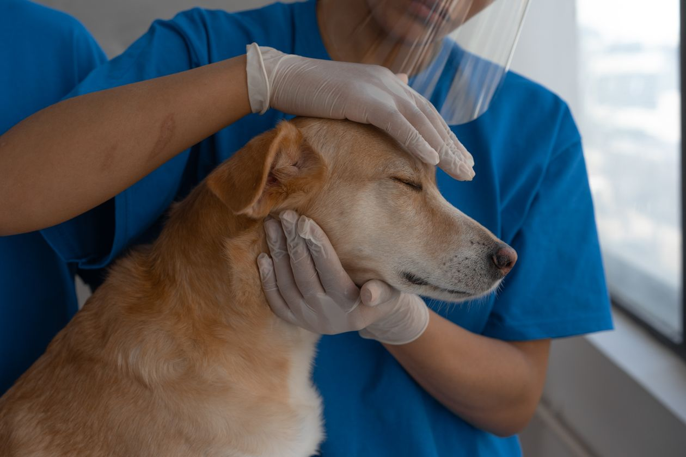
Consulta y medicina preventiva
Controles de salud, planes de vacunación y desparasitación, y seguimiento personalizado según edad, raza y estilo de vida.
En Alba combinamos especialidades médicas, diagnóstico por imágenes e internación propia para cuidar a tu mascota en cada etapa de su vida, con un equipo que te explica todo, sin vueltas.
Escribinos y te respondemos ya
La guardia está activa las 24 horas. Si podés, avisá antes de venir para que el equipo ya esté preparado.
Desde el primer control de cachorro hasta los cuidados del animal mayor, con historia clínica digital y recordatorios de vacunas y controles.

Controles de salud, planes de vacunación y desparasitación, y seguimiento personalizado según edad, raza y estilo de vida.
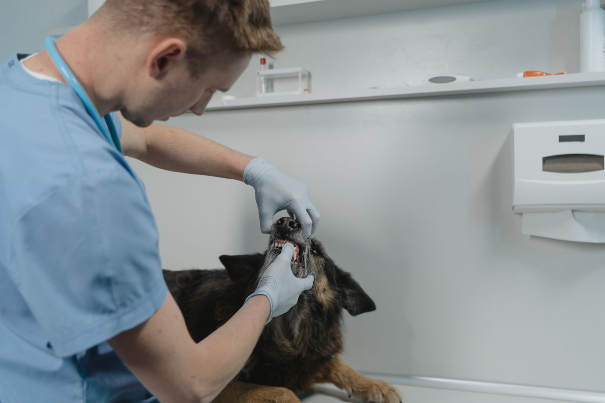
Calendario completo para cachorros, adultos y seniors, con aviso previo a cada vencimiento para que nunca se te pase una dosis.
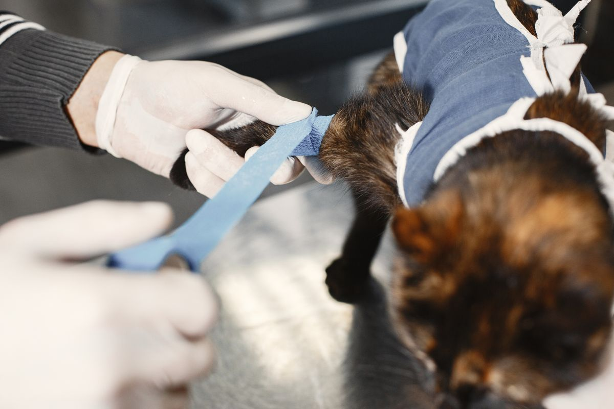
Atención de heridas, vendajes, yesos y seguimiento de fracturas, con control radiográfico en la misma clínica.
6 especialidades médicas y diagnóstico en la clínica. Elegí el área que necesitás y mirá cómo podemos acompañar a tu mascota.
Contanos qué cambios notás en tu mascota. Un mismo equipo sigue su historia y te explica el diagnóstico y el tratamiento.
Conocé cómo acompañamos a tu mascota antes, durante y después de la cirugía, con quirófano e internación en la clínica.
Si notás cambios en los ojos de tu mascota, contanos qué pasa. Revisamos su salud ocular y te explicamos los cuidados.
Seguí el control cardíaco de tu mascota con estudios en la clínica y explicaciones claras sobre cada resultado.
Cuidá también su salud bucal. Revisamos la boca de tu mascota y te explicamos qué necesita para prevenir dolor e infecciones.
Traé a tu gato a un espacio pensado para él: separado de los perros y con un manejo que ayuda a bajar su estrés.
Recibí los resultados y una explicación paso a paso, con ecografía, radiología digital y laboratorio en la misma clínica.
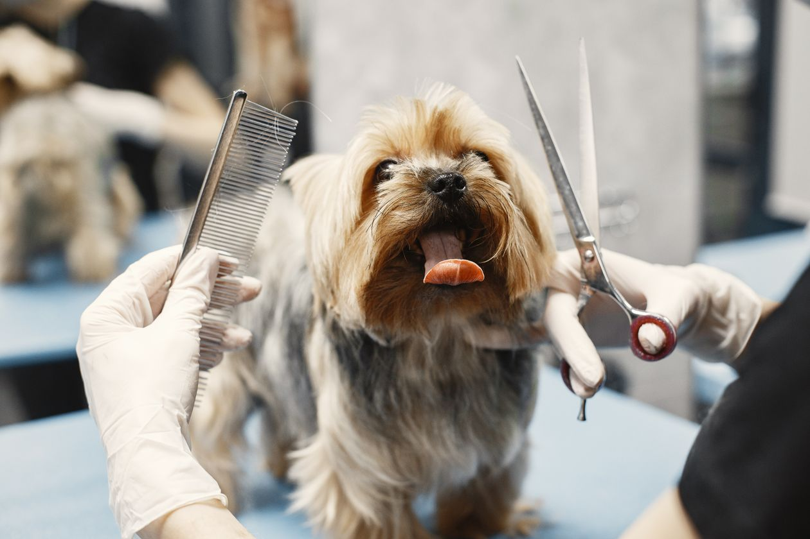
La guardia recibe a tu mascota y atiende la urgencia.
Con imágenes y laboratorio en la clínica, te explicamos qué pasa.
Si necesita quedarse, la cuidamos con control las 24 horas.
Te explicamos los cuidados y coordinamos el seguimiento.
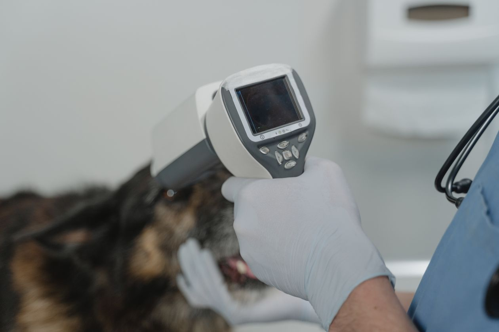
Consultorios equipados para perros y gatos, con área de imágenes y laboratorio integrados.
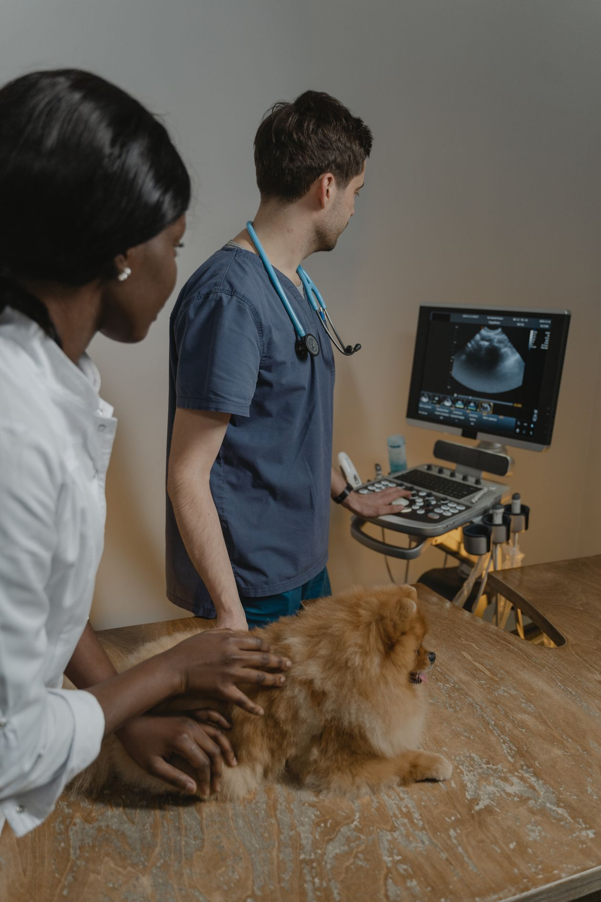
Quirófano con monitoreo anestésico permanente e internación con control las 24 horas.
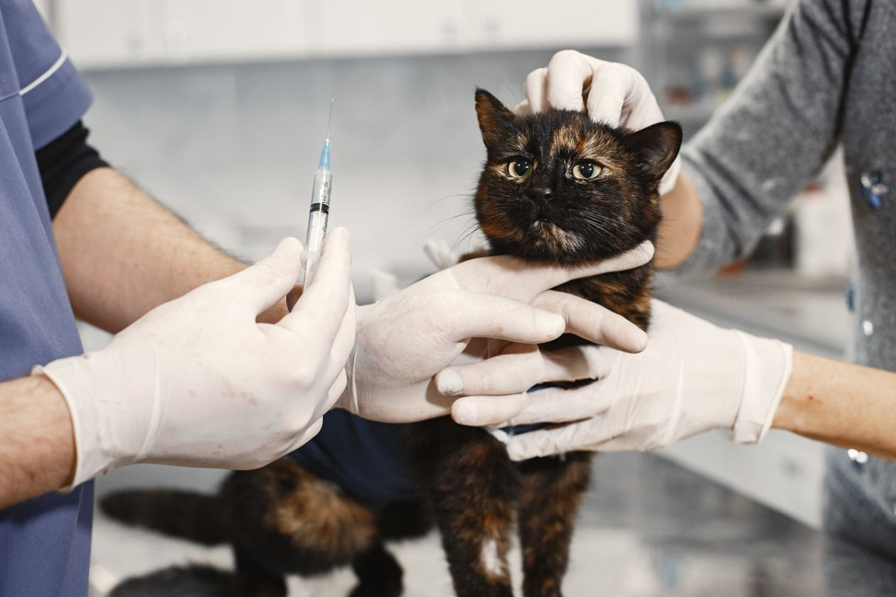
Espera e internación exclusivas para gatos, lejos de los perros, para una visita tranquila.
14 profesionales en un equipo estable, que conoce a cada paciente por su nombre y sigue su historia en el tiempo.
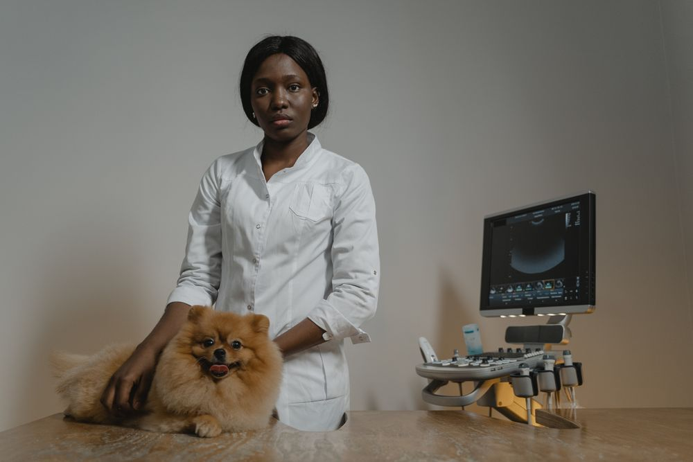
Más de 15 años de clínica de pequeños animales y formación continua en medicina interna.
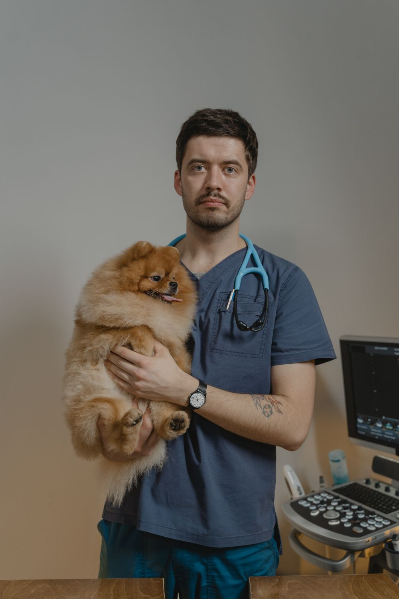
Cirujano del equipo, a cargo del quirófano y de los seguimientos posoperatorios.
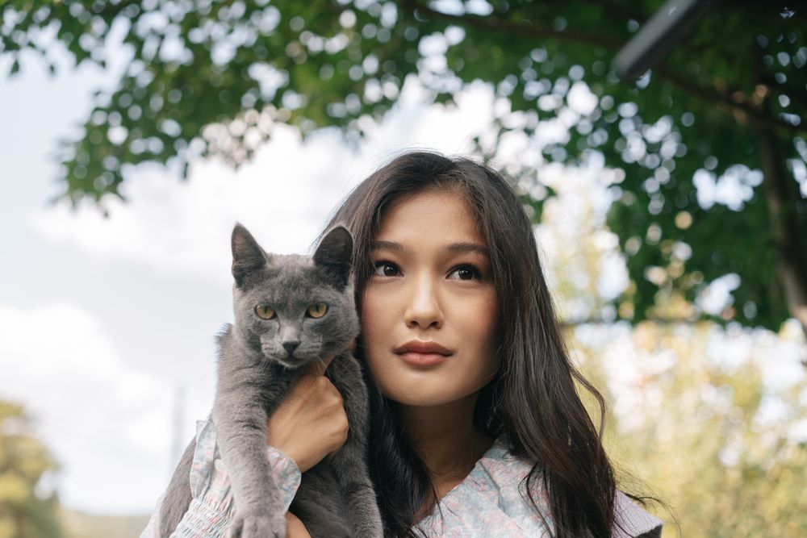
Especialista en gatos y en diagnóstico por imágenes: ecografías y radiología digital.
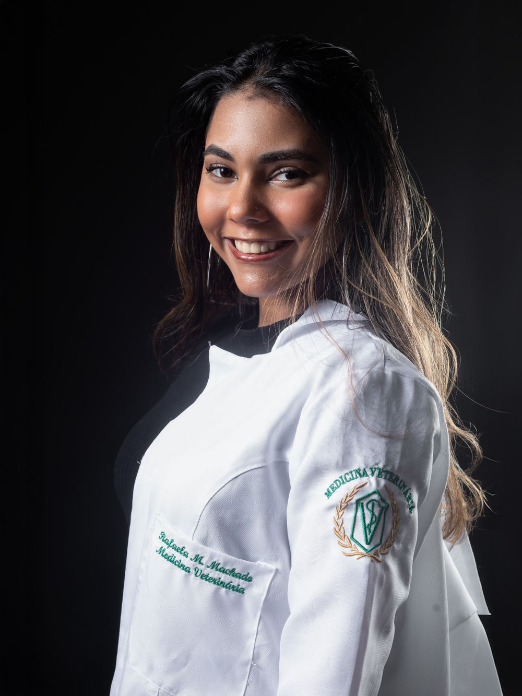
Salud bucal y control cardíaco de pacientes crónicos y seniors.
“Llevo a mi perra desde cachorra. Siempre me explican todo con paciencia y los controles llegan con aviso, nunca me olvido de una vacuna.”
“Mi gato se estresa mucho fuera de casa y la sala separada para gatos hizo toda la diferencia. Atención impecable.”
“A las 3 de la mañana tuve una urgencia y me atendieron al instante. Esa tranquilidad no tiene precio.”
Pedí tu turno o acercate a conocernos. La primera consulta de control incluye la apertura de la historia clínica digital.
Reservá tu turno